The Berry Tree
"The hands of many will join as one, and together we'll cross the river"
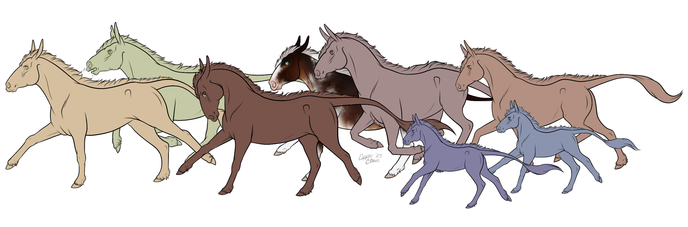 Goose's family is a huge part of his life, and even when his heart calls him to adventure, he knows he'll always have a safe place to return to with them.Contributions here are from everyone! Our potential RUs would be used as designs for Goose's family members
Take as much (or as little) inspo as you'd like for RUs, should our form win!
Meet the Berrys

Goose Berry
Stallion • • 6
Gained his name for being a silly goose, and for how he honked as a foal. Loveable and determined.
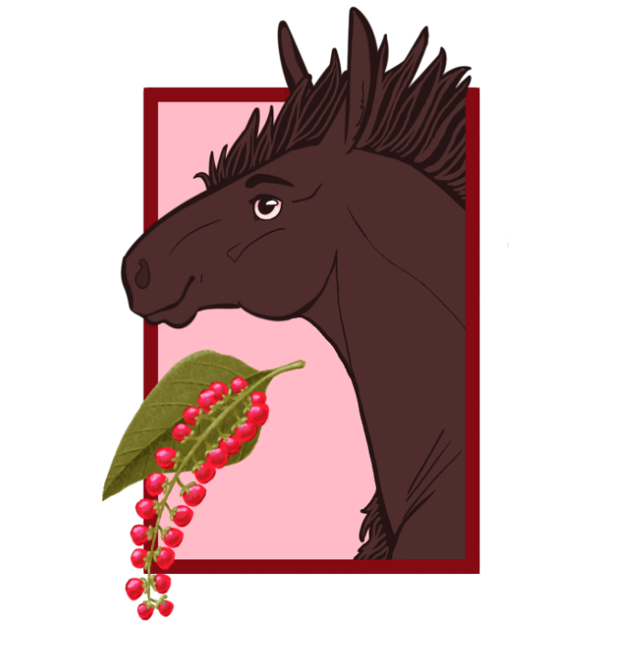
Pigeon Berry
Stallion • Brother • 3
Wanted to be a pigeon when he grew up. Goose's younger brother, looks up to him a lot. Goofy and earnest.
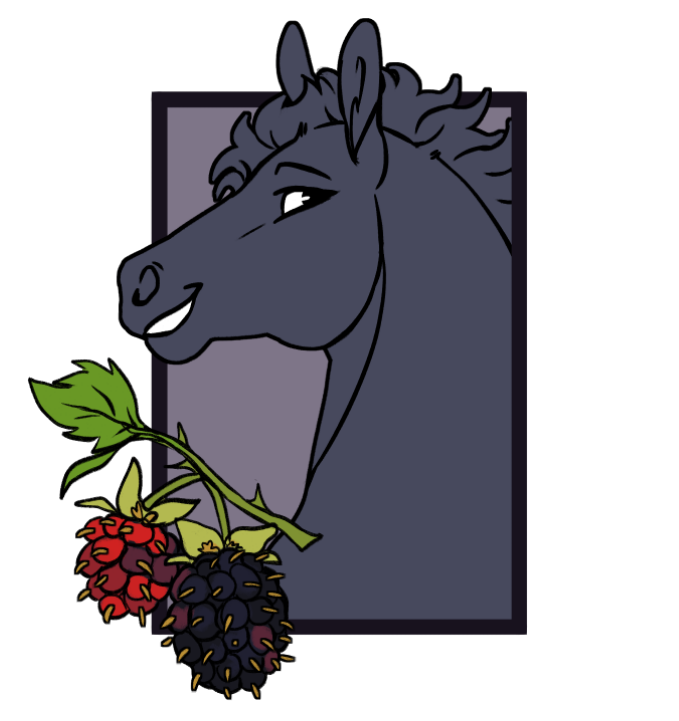
Dew Berry
Mare • Cousin • 4
Has always loved licking dew off of leaves, earning her name. Spunky and playful, but quiet. Blue's twin sister.
Blue Berry
Stallion • Cousin • 4
Gained his name because he was born under the biggest, bluest sky. Daydreams of being a cowboy. Yeehaw! Dew's twin brother.
Del Berry
Stallion • Brother • 1
Goose named him after a piece of trash found on his journeys. It had buttons that said "Blackberry", "ATET", "Space", or "Del". They called him Space for a while, then decided on Del.
Crow Berry
Stallion • Nephew • 2
Crow is dark in color and was born very late in the season, after first snow, earning him his name. He has a standoffish demeanor, however; he is a gentle soul wrapped in layers of silence.
Hippophae "Fae" Berry
Mare • Aunt • 10
Inherited her name from her great great great great granddam. Travels Europe, and brings home gifts for her family.
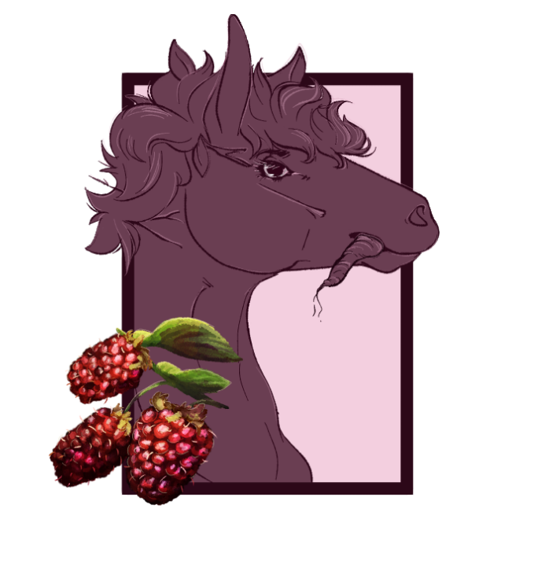
Tay Berry
Mare • Aunt • 9
Fae's little sister. She always threatens to turn Goose into a real goose with her potions when he acts out.
Straw Berry
? • Second Cousin Once Removed • 6
They got their name because they ate straw instead of hay one time, and nobody will let them forget it.
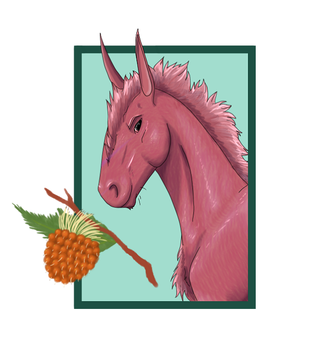
Salmon Berry
Stallion • Father • 13
Loves water, but can't swim - someone said he looked like he was a salmon swimming upriver, for all of the leaping and splashing he was doing. He's a loving and supportive dad, always with a helping hoof and horrible dad joke ready.
Wolf "Wolfie" Berry
Nonbinary • Cousin • 8
Cousin Wolfie ran away from home as a foal, and was raised by a pack of wolves. Now they’re back, but they’ve turned out a little… odd.
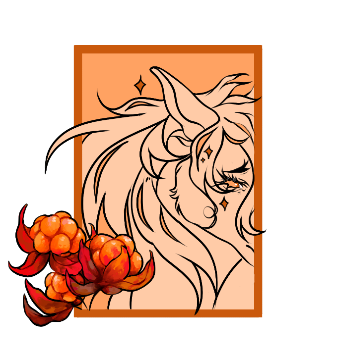
Cloud Berry
Stallion • Cousin • 3
Goose’s Famous show horse cousin. Named for their soft and fleeting spirit. Much like a cloud, he prefers to be admired from afar and is immediately shy and quick to disperse when approached.
Miracle "Myr" Berry
Nonbinary • Sibling • 5
Adopted into the family after they were found alone in a berry patch, named for the miracle of their survival all alone as a little foal. Massive people pleaser, will go out of their way to make sure everyone else is happy.
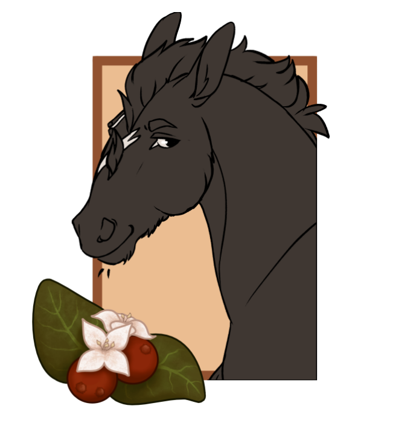
Two-Eyed "Mitch" Berry
Stallion • Uncle • 9
Nearly lost an eye as a foal when he chased a grasshopper, slipped, and tumbled headfirst into the brambles. In the years after, that story and the resulting scar gave rise to the moniker!
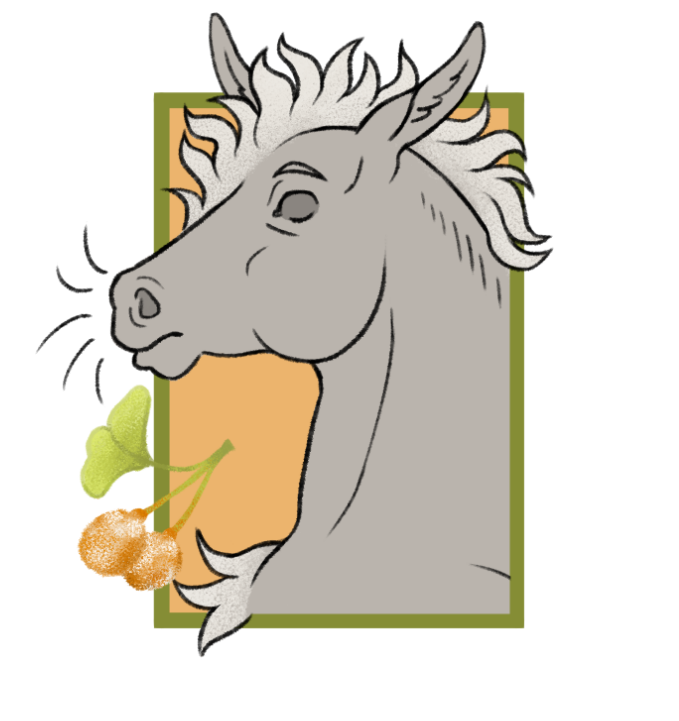
Sea "Ginko" Berry
Stallion • Cousin • 3
Found abandoned and premature amongst a bungle of seaberries. He’s turned into an experimental (and questionable) homeopathic, constantly collecting herbs and mixing concoctions to help the family feel better.
Saskatoon "Sas" Berry
Stallion • Cousin • 3
Saskatoon gained his name from his mother's pregnancy cravings. He's sweet, but also nutty - even his family feels like he speaks a different language sometimes.
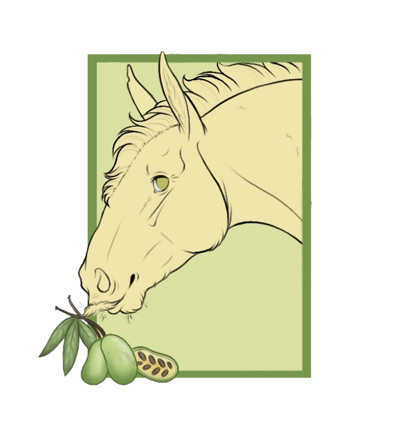
"PawPaw" Berry
Stallion • Grandfather • 26
Jolly Ole fella, cheerful, stern with his kids but let's the grand foals run wild in good fun. He earned his title after he became a grand-paw.
"Nana" Berry
Mare • Grandmother • 30
A big softie. She's always in a good mood, no matter what shenanigans the little Berries are up to. The only thing mean about her is her casserole!Goose's Gifts
Trinkets from Goose's family, given to him before his big adventure, to keep them close.

Goose's Journal

Faberge Egg
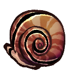
"Cousin Dew gave me this shell, full of dew. She said it would brighten up my day and keep me hydrated. It shines bright in the sun........I did already drink the dew from it......."
Snail Shell

Pigeon Feather

Berry Seeds

"Lucky" "Rabbit's" Foot
Item may be cursed.
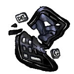
"Baby Bro, Del gave me this in honor of his name and as a reminder of one of my first adventures. I still chuckle when thinking of that memory. He was freshly born back then."
Broken "Blackberry"
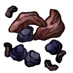
"Cousin Ginko gave me these. He means well, but i'm not sure what they do.......and he claims they were self-tested."
Dried Mystery Berries
Keep out of reach of foals, the elderly, and those who want to retain a normal life

Shiny Rock

Adder Stone

Wolf Tooth

Snake Skin